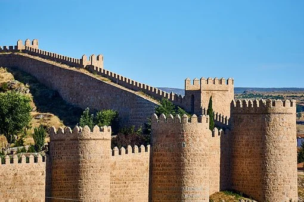

PROVINCIASBURGOSLEON PALENCIA SALAMANCA SEGOVIA SORIA VALLADOLID ZAMORA ENLACES EXTERNOS VOLVER AL INCIO |
ÁVILAÍNDICE
1. LOCALIZACIÓNAvila se encuentra al sur de la comunidad 2. LOCALIDADES PRINCIPALESPrincipales ciudades:Avila, Arévalo, Arenas de San Pedro y Las Navas del Marqués. Ubicacion de Avila capital 3. GEOGRAFÍA DE LA PROVINCIACoordenadas geograficas: Latitud: 40.6564, Longitud: -4.70032 . 40° 39′ 23″ Norte, 4° 42′ 1″ Oeste Superficie: 23.071 hectáreas, 230,71 km² Altitud: 1.131 Clima: mediterraneo Tiempo actual de Avila: 4. HISTORIALos orígenes de Ávila se pierden en la noche de los tiempos, incluso se ha llegado a hablar de un origen legendario, pero ciñéndonos a la realidad el primer pueblo que se asentó en Ávila fueron los Vettones, una rama de los Celtas que pobló las actuales provincias de Ávila, Salamanca y parte de Portugal hacia el año 2500 a. C. Sus asentamientos son conocidos como castros, y en la actualidad podemos visitar algunos cercanos a Ávila, como el de Las Cogotas, en Cardeñosa, el de Ulaca, en Solosancho, el de Castillejos, en Sanchorreja, o la Mesa de Miranda en Chamartín. Sin duda el símbolo más característico de los Vettones es el verraco, una escultura zoomórfica realizada en piedra, de la que podemos encontrar varios ejemplos en la ciudad, como el situado en la plaza de Adolfo Suárez, el que está a la puerta del palacio de los Verdugo o el de la Romarina, custodiado en el torreón de los Guzmanes; otros que se guardan en el almacén visitable de Santo Tomé, algunos están incrustados en la muralla, y otro que sirve de base a la torre de la iglesia de San Nicolás. Durante el periodo de la romanización sí que podemos hablar de un asentamiento de población de cierta envergadura en Ávila. Así lo atestiguan elementos como el urbanismo de la ciudad antigua, donde se distingue claramente el antiguo foro, hoy plaza del Mercado Chico, o los restos de monumentos funerarios romanos que forman parte de la muralla y que proliferan especialmente en la zona del jardín de San Vicente, donde se encontraba la antigua necrópolis romana. En el periodo de dominación romana hay que citar a algunos personajes relevantes, como son San Segundo y los santos hermanos mártires Vicente, Sabina y Cristeta. San Segundo es el patrón de la ciudad y su fiesta se celebra el día 2 de mayo en torno a la ermita que lleva su nombre, junto al río Adaja. Según la tradición fue el primer obispo de Ávila y uno de los siete varones apostólicos enviados por San Pedro para evangelizar la península Ibérica. En cuanto a los hermanos Vicente, Sabina y Cristeta, fueron martirizados en el siglo IV en el descampado que existía donde hoy se levanta la basílica que lleva su nombre, que es una de las joyas del románico abulense, al igual que el cenotafio que hay en el interior donde se narra al detalle su martirio. Se hace difícil hablar de la etapa visigoda en Ávila, ya que los restos que nos han llegado de esa época son poco abundantes. Cabe destacar la fundación del monasterio de Santa María la Antigua, del que únicamente se conserva el ábside. Durante la invasión musulmana Ávila fue "tierra de nadie", un desierto estratégico que servía de frontera entre los árabes, asentados en el sur y los cristianos, replegados en el norte, desde donde iniciarán la Reconquista, ya en el siglo XI. El conde Raimundo de Borgoña, yerno del rey Alfonso VI de León y de Castilla será el encargado de repoblar las tierras del sur de la meseta. Para afianzar la seguridad en la zona se fortifica la ciudad construyendo la muralla, que desde entonces determinará el carácter militar e incluso el carácter personal de los propios abulenses. Junto con la muralla también se construyeron a partir de la reconquista numerosos edificios. En cuanto a arquitectura civil conservamos El Episcopio, una antigua sala de Sínodos que formaba parte del antiguo palacio episcopal y que actualmente es un centro cultural de titularidad municipal. En los siglos XII y XIII se construyeron las iglesias románicas de la ciudad, en torno a las cuales fueron surgiendo los barrios históricos, organizados en su mayoría por oficios. En estos barrios también tuvieron cabida otras minorías étnicas como los judíos, que se asentaron intramuros en la zona del Mercado Chico y de la actual calle Vallespín y los árabes situados en el arrabal sur. A finales de la Edad Media, (siglo XV), Ávila va a comenzar a tener un protagonismo de primera fila en la Historia de España, de la mano de Isabel la Católica. Primeramente, durante las guerras civiles castellanas, Ávila fue la sede de los partidarios del infante Alfonso frente a Enrique IV y más tarde, siendo ya reina Isabel, Ávila se convertirá en el lugar de descanso eterno de su hijo el príncipe Don Juan, que fue enterrado en el Real Monasterio de Santo Tomás, una de las joyas del último gótico, conocido como estilo hispanoflamenco. Pero sin duda la época de mayor apogeo de la ciudad de Ávila fue el siglo XVI, momento en el que se levantan los grandes palacios renacentistas, donde príncipes y reyes visitan la ciudad y cuando nace la figura más universal de todos los abulenses, Teresa de Cepeda y Ahumada, más conocida universalmente como Santa Teresa de Jesús. Una mujer intrépida y adelantada a su tiempo, que además de ser la reformadora de la orden del Carmen, cuyo primer convento fue el de San José de Ávila, también destacó por su obra literaria y por eso da nombre al premio Internacional de las Letras que cada año concede el Ayuntamiento. Los siglos XVII y XVIII fueron nefastos para Ávila. El asentamiento de la Corte de forma definitiva en Madrid impulsó a la nobleza abulense a cerrar sus palacios y trasladarse a la capital del reino, quedando sus posesiones abulenses casi abandonadas. Ávila perdió gran parte de su población y durante estos dos siglos y gran parte del XIX vivió en verdadera decadencia. Hay un hito a finales del siglo XIX que volvió a situar a Ávila en el mapa, se trata de la llegada del ferrocarril y por lo tanto la posibilidad de comunicarse más rápidamente con otras ciudades. El ferrocarril permitió que vinieran a Ávila numerosos viajeros, entre ellos pintores y literatos, atraídos por una ciudad que seguía viviendo como en el siglo XVI. Por eso, a finales del siglo XIX y principios del siglo XX Ávila recibe la visita de grandes artistas como los pintores Ignacio Zuloaga, Eduardo Chicharro, José María López Mezquita, Diego Ribera o escritores de la talla de Azorín, Enrique Larreta o Miguel de Unamuno. Ávila y su costumbrismo es retratado y difundido por todo el mundo y se da el caso de que algún pintor como el italiano Guido Caprotti, no se conformó sólo con llevar al lienzo escenas y personajes típicos de Ávila, sino que decidió instalarse, vivir e incluso descansar en paz en la ciudad de las murallas. Poco a poco, durante el siglo XX Ávila ha dejado atrás su época de decadencia para ir creciendo, especialmente en número de población, superando en la actualidad los sesenta mil habitantes. Dispone de nuevas infraestructuras al servicio de todos y ha apostado por dar a conocer sus valores esenciales como es el rico patrimonio histórico artístico, por algo fue declarada por la UNESCO Patrimonio Mundial de la Humanidad en 1985. Hoy la historia de Ávila sigue creciendo y tú puedes sentirte protagonista de ella. Contemplar sus monumentos, caminar por el paseo del Rastro oteando el horizonte del Valle Amblés, sentirte defensor de la ciudad desde el adarve de la muralla, conocer una historia de amor verdadero en la calle de la Muerte y la vida, comprar frutas y verduras en el mercado semanal de los viernes en el Chico, disfrutar del bullicio de la gente y del comercio en el Mercado Grande y calles aledañas, o sentir el silencio siguiendo las huellas de Santa Teresa sólo es posible en un lugar llamado Ávila, que es algo más que una ciudad Fuente 5. CULTURAActividades de Ocio y Cultura6. NATURALEZALugares de interes Audio IV Jornadas de Conservacion de la Naturaleza 7. TRADICIONES8. OTROS ASPECTOSCinco personajes relevantes de Avila |